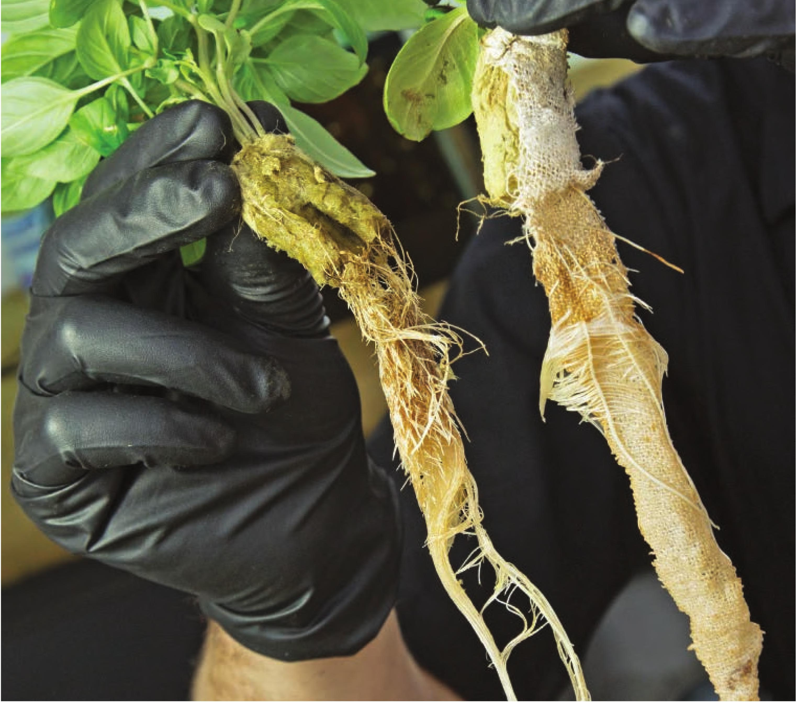

Some crops, like the basil on the left, can send roots into the nutrient solution faster than the nutrient solution is lost due to evapotranspiration. These crops may not require a wicking strip. Other crops, like the heirloom romaine lettuce on the right, grow slowly and greatly benefit from a wicking strip to assist with water uptake. Additional Options Decorations Besides chalk art, I like to decorate my hydroponic bottles with name tags and burlap scarfs. Covering the neck of the bottle with a scarf can help hide any potential algae growth on the surface of the seedling plug. I use a hot glue gun to secure burlap on the neck of the bottle. Lighting Hydroponic bottle gardens are best suited for indoors. They can be placed on a windowsill and receive natural light or placed under a grow light. Hydroponic bottles under a small grow light are a great addition to a work desk. Troubleshooting Plants are wilting • Check water level and add additional nutrient solution if water level is low. • Water temperature or air temperature may be too high. • Try adding wicking strip if roots are not reaching nutrient solution. Plug is falling into bottle • Try wrapping plug in cloth or burlap to create a snugger fit into neck of bottle. • Place plug so more stone wool is exposed above bottle opening. Plant is growing slowly or poorly • The crop selection may not be appropriate for hydroponic bottle garden. • Crop may not be receiving enough light. • Use a fertilizer designed for hydroponics. HYDROPONIC GROWING SYSTEMS 49
